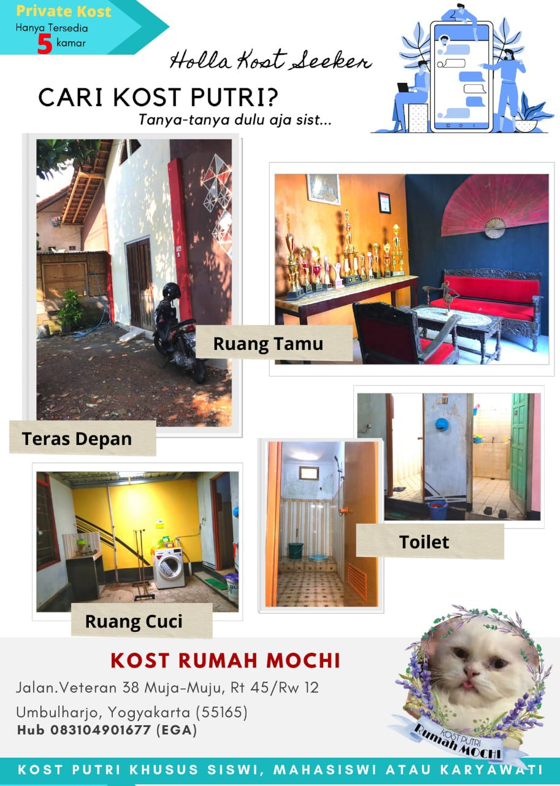

✨ Kost Putri Nyaman di Pusat Kota Yogyakarta
Tinggal di tempat yang aman, bersih, dan strategis bukan lagi mimpi. Rumah Mochi hadir untuk menemani perjalananmu di Yogyakarta — tempat tinggal yang manis, nyaman, dan penuh ketenangan.
💖 Tentang Rumah Mochi
Di Rumah Mochi, kami percaya bahwa tempat tinggal bukan sekadar atap, tapi ruang untuk tumbuh dan beristirahat dengan damai. Setiap sudutnya dirancang agar kamu bisa fokus belajar, bekerja, dan beristirahat tanpa khawatir soal kenyamanan.
“Manis seperti Mochi, hangat seperti rumah.” 🍡
Terletak di jantung Umbulharjo – Muja-Muju, Rumah Mochi dikelilingi kampus, fasilitas publik, dan tempat belanja yang mudah dijangkau.
🛏️ Fasilitas Lengkap & Modern
- Full Furniture (tempat tidur, lemari, meja belajar, kursi, rak)
- Kamar luar
- Kipas
- Wi-Fi cepat dan stabil
- CCTV 24 jam untuk keamanan penghuni
Fasilitas Umum
- Dapur bersama & area jemur
- Area pet (kamar kucing)
- Parkir motor aman
- Kebun & area bersantai
- Lingkungan bersih dan tenang

📸 Galeri Kamar & Fasilitas
📍 Lokasi Super Strategis
Kelurahan Muja-Muju, Kecamatan Umbulharjo, Yogyakarta. Dekat dengan RS Hidayatullah, UAD, UST, Super Indo Gedongkuning, dan Balai Kota Yogyakarta.
💬 Testimoni Penghuni
“Tempatnya bersih banget, pemiliknya juga ramah. Cocok buat yang pengen fokus kuliah.” — Ayu, Mahasiswi UAD
“Dekat tempat kerja dan aman pulang malam. Worth it banget untuk harga segini.” — Rina, Karyawati Swasta
💰 Harga & Ketersediaan Kamar
| Tipe Kamar | Fasilitas Utama | Harga per Bulan |
|---|---|---|
| Tipe Small | Full Furniture + Kipas + KM Luar | Rp 550.000 |
| Tipe Reguler | Full Furniture + Kipas + KM Luar | Rp 650.000 |
💡 Diskon khusus untuk sewa tahunan!
⚠️ Hati-Hati Penipuan!
Kami tidak pernah meminta pembayaran atau transfer ke rekening pribadi selain yang tertera resmi pada gambar informasi pembayaran.
- Pastikan nama rekening dan nomor tujuan sesuai dengan informasi di gambar resmi.
- Jangan melakukan pembayaran tanpa konfirmasi langsung ke admin melalui WhatsApp resmi kami.
- Hindari penawaran mencurigakan di luar kontak resmi @rumahmochi.kostputri.
💬 Jika ragu, hubungi admin di WhatsApp: Klik untuk Chat Resmi
📞 Hubungi Kami
📍 Jl. Muja-Muju, Umbulharjo, Yogyakarta
📱 WhatsApp: Klik untuk Chat
📧 Instagram: @rumahmochi.kostputri